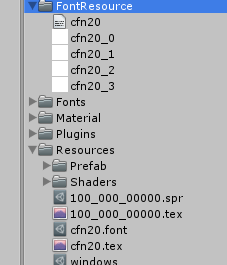
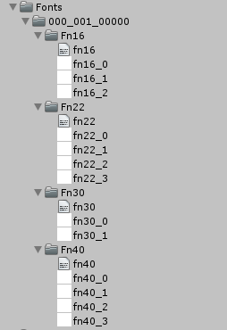

Font¶
It can handle four bitmap fonts as one of the font texture.
When you convert these four bitmaps, it uses the α channel of the bitmap file. Four α channels are mapped to each channel(R,G,B,A) of a single texture.
If the number of bitmap exceeds 4, it can’t be handled as a single font data.
Created as a resource data¶
Make a FontResource folder under the “Assets/KsSoft/” folder.
You put the text file and bitmap files that are named with FiveCC under the folder.
If you want to create a font named “cfn20”, you need to prepare the files such as follows.And you place these in this location.
- cfn20.txt
- cfn20_0.png
- cfn20_1.png
- cfn20_2.png
- cfn20_3.png
You highlight the “cfn20.txt”, and choose the [Right-click]→[Export]. Files such as the following are generated under the “Resources” folder.
- cfn20.font
- cfn20.tex
By these steps,your application can use the “cfn20” as a font data.

Created as an asset bundle data¶
Make a Fonts folder under the “Assets/KsSoft/” folder.
You put the text file and bitmap files that are named with FiveCC under the folder.
If you want to create a font named “fn16”, you need to prepare the files such as follows. And you place these in this location.
- fn16.txt
- fn16_0.png
- fn16_1.png
- fn16_2.png
- fn16_3.png
Also, when you want to use multiple fonts, put the number required by the same procedure.
If you are ready, run the [Tools]->[KsSoft]->[Export Fonts].
The following asset bundles are generated.
assetbundles/Windows/000_001_00000.unity3dWithin this asset bundles are stored all font data required.

Note
When you want to change the default value, please reference here .
The font data generating method of BMFont¶
Introduce a method of making bitmap fonts by the BMFont(Bitmap Font Generator).
Creating a bitmap font¶
■Font Settings
First, select the font you want to use. Select the [Options]→[Font Settings] from the menu.
Then select the font type and font size.
Put a check in the [Match char height].
Put 100 to [Hieght%].

■Export Options
Next, to set the Export. Select the [Options] → [Export Options] from the menu.
You change the value of the part of the following red frame.

■ Select the character that you want to include
Then you select characters included in the bitmap font.
■ confirmation
Ensure that you are correctly output along the items set. Select [Options] → [Visualize] from the menu, you can preview.
Make sure that bitmap number is within four.
If the bitmap number is one, almost always it may be possible to reduce the data size. You try to adjust the texture size that the bitmap number may be four.
■Output
This configuration is complete.
Select the [Options] → [Save bitmap font as ...] from the menu, and then output bitmaps.
You need to save the file using a FiveCC .
Finally, you need to change the “fnt” extension to “fnt”.